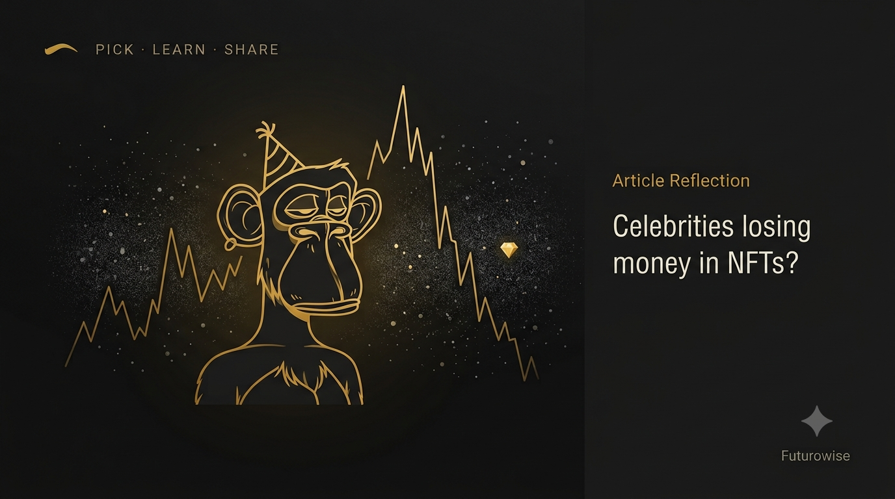

The Cartoon Ape That Cost a Million Dollars

— and the skill it should teach.
In January 2022, Justin Bieber paid 500 units of the cryptocurrency Ethereum — about 1.3 million dollars — for a picture of a bored-looking cartoon ape. He didn’t even buy a rare one; analysts noted he paid nearly five times the going rate for one of the collection’s most common apes. [1] Not a house. A JPEG. By early 2026 that same ape was worth roughly 12,000 dollars — a fall of about 99 percent. [1] And he was one of millions who walked into the same fire.
To see how so many intelligent people ended up here, you need one term: NFT, or non-fungible token. “Fungible” means interchangeable — one ten-rupee note is exactly as good as any other. “Non-fungible” means unique — a house, a signature, an original painting. An NFT attaches a unique certificate of ownership to something digital and records it permanently on a blockchain, a shared ledger no single person can quietly rewrite.
The promise was genuinely interesting. In a world where any image can be copied endlessly, NFTs offered provable scarcity — a way for a digital artist to sell an original work and prove who owned it, just as a painter sells a canvas.
How the Frenzy Began
The frenzy began on 11 March 2021, when the artist Beeple sold a digital collage at Christie’s for 69.3 million dollars. [2] The world lost its head. Over that year, NFT sales ballooned to around 17.7 billion dollars — up from just 82 million the year before. [3] The Bored Ape Yacht Club — 10,000 unique cartoon apes launched in April 2021 — became the badge of the era. Eminem, Madonna, Neymar, Stephen Curry and Snoop Dogg all bought in.
One purchase captures the madness perfectly. In March 2021, an entrepreneur paid 2.9 million dollars for an NFT of Jack Dorsey’s first-ever tweet — the five words “just setting up my twttr.” A year later he tried to resell it, expecting tens of millions. The top bid was 280 dollars. [4] Economists have a blunt name for that pattern: the greater fool theory — an asset is worth something only because you believe a greater fool will buy it from you.
You don’t buy because the thing is valuable. You buy because you’re sure someone more foolish will pay you more for it later. The music stops the moment there’s no greater fool left — and someone is always holding the token when it does.
Then It Stopped
By 2023, a study of 73,257 NFT collections found that 69,795 of them — about 95 percent — had a market value of zero. An estimated 23 million people were left holding tokens worth nothing, and weekly trading had shrivelled to roughly 3 percent of its peak. [5] Prices didn’t gently deflate; they fell off a cliff.
The scams made it worse. The market filled with “rug pulls,” where creators hyped a project, took the money, and vanished. Two twenty-year-olds behind a collection called Frosties collected over a million dollars from buyers, shut the website within hours, and were arrested — the first NFT rug-pull prosecution in the United States — while already preparing their next scheme. [6] Rug pulls were not a footnote; they drained billions from the market.
The Part Most People Miss
Here is the part most people miss. Beeple himself offers the right comparison: the dot-com crash of 2000 wiped out hundreds of companies, yet the internet went on to reshape civilisation — Amazon and Google rose from the same rubble that buried Pets.com. The frenzy and the technology are not the same thing. The apes were the noise. The signal — a tamper-proof record of who owns what — was already being tested in serious places. Back in 2017, MIT began issuing graduates tamper-proof digital diplomas on the blockchain, verifiable by any employer in seconds and effectively impossible to forge. [7] The same core idea now underpins pilots for counterfeit-proof event tickets and land records.
The apes were the noise. The signal was a tamper-proof record of who owns what — and it was quietly working the whole time.
The Real Lesson for Students
That is the real lesson for any student. The hard skill isn’t spotting a trend; it’s separating a genuine innovation from the speculative bubble wrapped around it. And that is a data skill — asking unglamorous questions:
- Does this solve a real problem?
- Who actually uses it, and why?
- Is the price rising because of value, or only because of belief?
The people who lost fortunes weren’t stupid. They followed a crowd instead of the evidence. As AI, digital currencies and the next dazzling thing keep arriving, the ability to analyse a claim coldly — and explain it clearly — isn’t a nice extra. It is protection.
This story lands with teenagers because the names are famous and the numbers are absurd. Use it to teach one transferable habit: tell the technology apart from the hype around it. Ask students to run any trending claim — a coin, an app, a “guaranteed” opportunity — through the same three questions above. That is data literacy doing its most valuable job: keeping a clear head while everyone else is losing theirs.
I really loved the way Futurowise put this article together — to create awareness and share the importance of this hard data skill.
Sources
- Justin Bieber’s Bored Ape loss — Decrypt (via Yahoo Finance). finance.yahoo.com
- Beeple’s $69.3M Christie’s sale (context) — Artnet News. news.artnet.com
- 2021 NFT sales hit $17.7B, up from $82M in 2020 — Fortune. fortune.com
- Dorsey’s first-tweet NFT: $2.9M to a $280 top bid — Forbes. forbes.com
- “Dead NFTs” study: 95% of collections worthless — Forbes Australia (dappGambl data). forbes.com.au
- Frosties: first US NFT rug-pull prosecution — Forbes. forbes.com
- MIT’s blockchain digital diplomas (Blockcerts, 2017) — MIT News. news.mit.edu
This reflection builds on the article “The Cartoon Ape That Cost a Million Dollars” by Futurowise, with additional examples and independently verified figures.